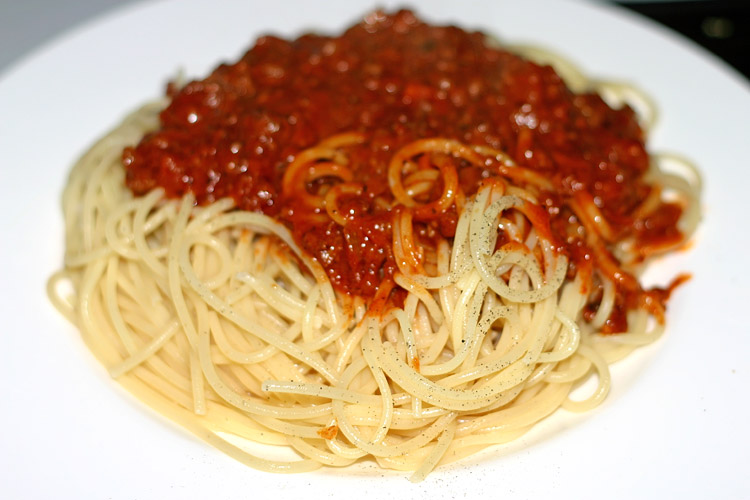

Miso Pasta Recipe

Source: wikimedia.org
Description
Spaghetti made with miso paste to substitute for the tomato used in the typical meat sauce.
Taste kind of similar to ready-made meat sauce in Japan while being very cost friendly.
Ingredients
- 300 ml Water
- 100 gr Spagetthi
- 75 gr Ground Pork
- 1 tbsp Miso Paste
- 2 tsp Chicken Bouillon Powder
- 2 tsp Vegetable Oil
- Salt and Pepper - season to taste
Steps
- Pour the vegetable oil on the pan and let it get hot.
- Put in the meat and stir fry until it's brown.
- Pour the water and wait until it's boiled, then put 1 tsp of salt.
- Insert the pasta, miso paste, and chicken bouillon and let it cook for the time recommended on the pasta package.
- Put the burner on high heat and stir until the sauce thicken.
- Season with salt and pepper to taste, stir it again.
- Serve the dish and enjoy.
Home